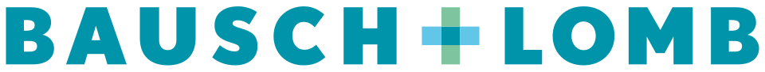

바슈롬 Bausch & Lomb
바슈롬(Bausch & Lomb)은 콘택트렌즈와 인공수정체, 의약품, 안과 수술 관련 제품을 만드는 안 건강 제품 기업이다. 1853년 미국 뉴욕주 로체스터에서 출발했다.
최종 업데이트

바슈롬은 어떤 브랜드인가
바슈롬은 콘택트렌즈와 인공수정체, 의약품, 안과 수술 관련 제품을 생산하는 안 건강 제품 기업이다. 1853년 외눈안경을 만드는 작업장으로 출발해 안경테와 현미경, 쌍안경, 카메라 렌즈 등으로 제품군을 넓혔다.
1971년에는 Poly-HEMA 소재 콘택트렌즈를 출시했다. 미국에서 가장 오래 계속 운영된 기업 중 하나였으며, 뉴욕증권거래소에 상장되어 있다가 2007년 사모펀드 Warburg Pincus에 인수되었다.
2013년에는 캐나다 기업 Bausch Health에 매각되었고, 현재 본사는 캐나다 온타리오주 Vaughan에 있다. 2022년 기준 약 12,900명 규모의 직원을 두고 있으며, 사명은 2010년부터 Bausch + Lomb로 표기한다.
바슈롬은 어떻게 시작되고 성장했나
1853년 안경사 John Bausch가 미국 뉴욕주 로체스터에서 사업을 시작했고 Henry Lomb이 자금을 댔다. 두 사람은 모두 독일 이민자였으며, 외눈안경을 만드는 작은 작업장으로 출발했다.
1861년에는 vulcanite 소재 안경테와 정밀 시력 제품을 제조하는 단계로 확장했다. 남북전쟁 중 북군의 봉쇄로 금과 유럽산 뿔 가격이 크게 오르면서 vulcanite 안경에 대한 수요가 늘었다.
1876년 Ernst Gundlach가 합류하며 현미경 제조를 시작했고, 1892년부터는 독일 Zeiss와 협력해 광학 렌즈를 생산했다.
바슈롬의 브랜드 아이덴티티는 무엇인가
1853년 로체스터에서 출발해 안경과 현미경 제조에서 콘택트렌즈와 인공수정체로 영역을 넓힌, 미국에서 가장 오래 운영된 기업 중 하나로 꼽힌 안과 전문 기업이다.
바슈롬의 대표 제품과 서비스는 무엇인가
현재 주력 제품은 콘택트렌즈와 인공수정체, 의약품, 안과 수술 관련 제품이다. 1965년에는 Otto Wichterle과 Drahoslav Lím이 만든 하이드로겔 콘택트렌즈 특허를 취득했고, 1971년 Poly-HEMA 소재 콘택트렌즈를 출시했다.
역사적으로는 사진 렌즈(1883), 안경 렌즈(1889), 마이크로톰(1890), 쌍안경과 망원경(1893)을 생산했다. 1936년에는 조종사용으로 Ray-Ban 선글라스를 개발했다.
영화 CinemaScope 방식에 쓰이는 개선된 광학 장치도 개발했다.
바슈롬은 지금 어떤 상태인가
본사는 캐나다 온타리오주 Vaughan에 있다. 2007년 사모펀드 Warburg Pincus에 인수되기 전에는 뉴욕증권거래소에 상장되어 있었고, 2013년 캐나다 기업 Bausch Health에 매각되었다.
2022년 기준 직원은 약 12,900명이다. 2010년부터 사명을 Bausch + Lomb로 표기하고 있다.
바슈롬 로고는 어떻게 변해왔나
자주 묻는 질문
바슈롬는 어느 나라 브랜드인가요?
바슈롬는 미국의 헬스·제약 브랜드입니다.
바슈롬는 언제 설립되었나요?
바슈롬는 1853년 설립되었습니다.
바슈롬의 브랜드 아이덴티티는 무엇인가요?
1853년 로체스터에서 출발해 안경과 현미경 제조에서 콘택트렌즈와 인공수정체로 영역을 넓힌, 미국에서 가장 오래 운영된 기업 중 하나로 꼽힌 안과 전문 기업이다.
바슈롬의 대표 제품은 무엇인가요?
현재 주력 제품은 콘택트렌즈와 인공수정체, 의약품, 안과 수술 관련 제품이다.
바슈롬의 본사는 어디에 있나요?
본사는 캐나다
바슈롬의 창업자는 누구인가요?
바슈롬의 창업자는 John Jacob Bausch, Henry Lomb입니다(위키데이터 기준).
바슈롬의 공식 웹사이트는 어디인가요?
바슈롬의 공식 웹사이트는 http://www.bausch.com/ 입니다.
출처와 검증
바슈롬 관련 참고: 공식 웹사이트 · 위키데이터 Q811857 · 한국어 위키백과 · 영어 위키백과. 브랜드명은 한글과 원어를 함께 표기하되 데이터에 없는 표기는 만들지 않습니다. 기원 국가·설립연도는 검수된 정의문에서 확인된 값을 우선하고, 없을 때만 공식 웹사이트 URL이 일치하는 위키데이터 개체의 값을 씁니다. 위키데이터 값은 2026-11-14 기준입니다.